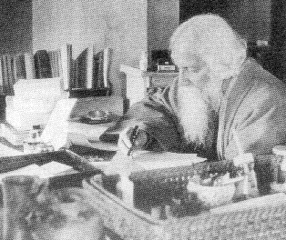

Tribute to the World-poet
25th Baishakh, 1409 Bangla year : the 141st birth anniversary of Rabindranath Thakur, the foremost icon of Bengali literature and culture who single-handedly transformed our beloved Bengali language into its today’s modern and mature form by virtue of his extraordinary creative genius. A true internationalist in spirit and a firm believer of universal humanism, he toiled hard to promote and propagate the Bengali language and literature in the world stage which eventually led to his winning of the Nobel prize for literature in 1913. Much has been written about his unfathomable contribution to Bengali literature but not enough light has been shed on many other remarkable features of the beautiful mind of this myriad-minded man. One such less talked about side of this towering personality was his social and political consciousness, which we will try to address here briefly in our today’s birthday tribute to him.

- He wholeheartedly believed in the unity of the Hindu and Muslim communities and often publicly took stand in favour of the then downtrodden Muslim community. He actively took part in the movement against the partition of Bengal in 1905 and composed the theme song of that historical movement, ‘Banglar maaTi, Banglar jal’. He was also the initiator of the symbolic ritual of ‘raakhibandhan’ between the members of the two communities. But then he had the moral courage to denounce and discard this apparently noble movement, for it’s increasingly communal nature and oppressive role on the poor Muslim traders and farmers, as depicted in his ‘ghare baaire’ novel, later filmed by Satyajit Ray. In his later life he also vehemently protested against the proposal of making ‘Bande Mataram’ the national anthem of India, for it’s communal overtone and for being potentially offensive to the Muslim community of India.
- He was not an adherent of the narrow nationalist ideology and opposed it all along, both in national and international arena, for the fear of it’s potential danger of becoming divisive and chauvinistic, which we are all witnessing now in dismay through out South Asia and in other corners of the world. A man of conscience, he was at the same time very critical of the oppressive imperialist regime of the British India. We are all aware of his disowning the knighthood for the atrocities committed by the British soldiers on the innocent population of Jalianwalaabag and the accompanying scathing diatribe against the British government. He also wrote another passionate letter in the newspaper from the sickbed just two months before his death denouncing the British ruler in no uncertain terms for it’s shamelessly self-serving and hypocritical role in India.
- As a socially conscious person he was very much aware of the cruel oppression and discrimination against the Indian women in the name of culture, tradition and religion. He openly sympathized with the victimized women, strongly denounced all those oppressive social norms and practices and preached for the equal rights for the Indian women in many of his writings, such as ‘streer patra’, ‘chitrangadaa’, ‘jogajog’ etc to name a few. His sympathy for the women wasn’t confined to words only; he made conscious efforts to translate that into action. One such glorious example is arranging marriage of his own son Rathindranath Thakur to a child-widow Pratima Debee.
These three arbitrarily selected characteristics of Rabindranath are only a few among many of his other socially conscious and committed outlooks. We all should strive to know more about this exceptionally open-minded, truly modern and progressive personality and implement his humanist teachings in our personal and social lives.
That will be the greatest tribute to our beloved poet Rabindranath, who has provided us with both our national identity as Bangali and the national anthem, ‘aamaar sonaar bangla, aami tomaay bhaalobaasi.’
====================================================
Cross posting courtesy : Mukto-mona ( www.mukto-mona.com )
|
Visit : https://gold.mukto-mona.com |
© Copyright Mukto-mona. All rights reserved.